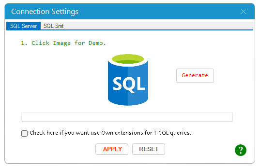

Thiết lập kết nối bằng cách sử dụng hộp thoại [SQL Connection]..
Đối với [SQL Server] bạn đọc click vào [Image] trên hộp thoại để xem video hướng dẫn.
Hàm được thiết kế chỉ kết nối duy nhất với [SQL Server].
Ngoài truy vấn thuần túy TSQL, hàm còn hỗ trợ các tiện ích mở rộng cho phép Truy vấn nâng cao.
Nếu bạn muốn sử dụng, hãy tích vào checkbox đồng ý sử dụng: 'Use Own Extension'.
Điều này sẽ làm thay đổi Database được kết nối của bạn nhưng không ảnh hưởng tới dữ liệu gốc là các bảng dữ liệu.
Nếu không sử dụng, Database của bạn sẽ không thay đổi (readonly) nhưng bạn không có các tiện ích mở rộng của Tools.
Lúc này, bạn có thể dùng truy vấn TSQL hoặc các tiện ích đã có của bạn để thực hiện truy vấn.
VD: lấy toàn bộ dữ liệu từ Persons bằng truy vấn SQL thuần túy.
Xem video Demo.
Hàm được thiết kế để kết nối với các file, CSDL bao gồm SQL Server, MS.Excel, MS.Access, MySQL, ..
Nếu muốn sử dụng hàm, bạn cần cài đặt thành công các Drive.exe tương ứng từ các CSDL đó.
Chi tiết cách thiết lập xem video tutorial từ fanpage.
Trong quá trình sử dụng hàm, sử dụng [Database_ID] đã được thiết lập cho các nguồn dữ liệu đã khai báo.
Xem video Demo.
Related function
SQL Truy vấn bảng dữ liệu cố định dựa vào câu lệnh SQL.
XQUERY Truy vấn dữ liệu giữa nhiều bảng dựa vào câu lệnh SQL.
PIVOT Tương tự chức năng PIVOT trong Power Query.
Return to Home